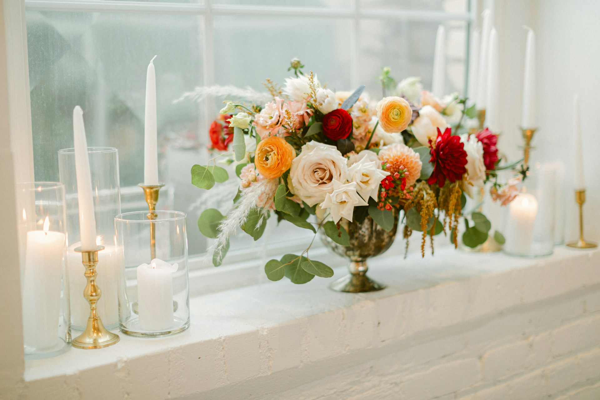

Mission
Creare matrimoni che restano nel cuore
"Credo che un matrimonio non sia un evento da gestire, ma un'emozione da vivere. La mia missione è trasformare i vostri sogni in un giorno che ricorderete per sempre."— Francesca Ferlauto
I pilastri
Tutto parte dall'ascolto. Capire chi siete, cosa vi emoziona, cosa sognate. Solo così posso creare qualcosa che vi rappresenti davvero.
La Sicilia non è solo uno sfondo. È un ingrediente fondamentale. La luce, i sapori, i profumi, la storia — tutto diventa parte del vostro matrimonio.
I dettagli perfetti contano, ma è l'emozione che rende un matrimonio indimenticabile. Ogni scelta è guidata dalla domanda: cosa farà sentire gli sposi e i loro ospiti?

La mia filosofia
In un mondo dove tutto è veloce e standardizzato, io scelgo la lentezza e la cura. Ogni matrimonio che organizzo è un viaggio che faccio insieme alla coppia, dal primo incontro fino all'ultimo ballo.
Non credo nei matrimoni "da catalogo". Credo nelle storie vere, nelle emozioni genuine, nelle risate spontanee e nelle lacrime di gioia. Il mio lavoro è creare lo spazio perfetto perché tutto questo accada naturalmente.
Il mio impegno
Trasparenza totale. Budget chiaro, nessun costo nascosto, comunicazione aperta e costante.
Dedizione esclusiva. Seguo un numero limitato di matrimoni per anno per garantire la massima qualità.
Rete di eccellenza. Lavoro solo con fornitori che condividono i miei standard di qualità e affidabilità.
Sostenibilità. Promuovo scelte eco-friendly: fiori locali, fornitori a km zero, riduzione degli sprechi.
Serenità. Il vostro percorso verso il matrimonio deve essere gioioso, non stressante. Ci penso io a tutto.
Memoria. Dopo il matrimonio, vi consegno un album fotografico del dietro le quinte e un report completo.
Iniziamo a scrivere insieme il capitolo più bello della vostra storia.
Contattami